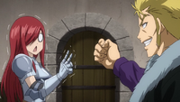

Fairies's Penalty Game

Information
Fairies' Penalty Game is the seventh OVA for the Fairy Tail series by Hiro Mashima, and the first for the 2014 anime series. It was bundled along with the Special Edition of Volume 55 of the Manga, which was first released on May 17, 2016. Due to the bet they made during the Grand Magic Games, the time has finally come for Team Fairy Tail A and B to decide who will have the privilege to make the other team do whatever they desire, leading to a day's worth of antics from the two parties.
Summary
As both teams surround Makarov, he declares that it's time for the two teams to decide who will be the victor in the bet. Laxus says they can't lose, while Erza follows up that they will come out as the victors, with Natsu cheering her on and Lucy and Gray stating their thoughts on the entire ordeal. The two S-Class Mages play a game of rock-paper-scissors; Laxus and Team B coming out victorious, frightening Team A. As Team B expresses their joy in their win, Happy and Carla make comments on the punishment game, with Lily mentioning the two Exceed share the same fate due to their partners being a part of Team A, stunning the two.
Team Natsu eventually journeys to a swamp near Magnolia, the Gates of Hell, upon a request from Laxus that there is a Magic Stone that resides in the swamp, ordering the team to retrieve it for him and the others; Elfman staying behind to massage the Lightning Dragon Slayer's back, much to his dismay. In the cave, Happy begins to drown in the swampy water, with Natsu being irked by Laxus' trivial demand; him and Gray wanting to fight the latter as they all observe the cave. While Wendy reads the map, Lucy gets attacked by leeches, which Natsu burns them off her skin for her. Just as he did so, they all notice something swimming in the water, appearing to be a much larger-in-size leech attacks Lucy, something Natsu and Gray watch closely, with Natsu later punching it away with Lucy taking the brunt of his attack. Out of nowhere, a monkey attaches himself to Gray, which the Ice Mage tells it to get off him, all the while a gorilla pops out from the forest to attack the team; Gray taking care of the large beast, something which that angers Erza as she takes notice of that she hasn't been challenged yet. Alligators begin to attack her, which she decisively finishes them off, but not after the rest of Team Natsu points out she slashed the bandages on her clothing, which causes Erza to throw all the creatures at their direction. After overcoming all the distractions as the continue to look for the gem, the monkey that attached himself to Gray empties the stone into Gray's mouth, something which Team Natsu is pleased at seeing as they head back for the guild hall.
With the Magic Stone in tow for use of the jacuzzi, Team B begins to relax in it, as they declare it's time for them to each choose their victims to have control over for the day: Laxus chooses Natsu and Elfman, Juvia chooses Gray, Mirajane chooses Erza, Gajeel chooses Lucy, Lily taking the two Exceeds, with Cana taking Wendy who remains. The Thunder God Tribe get invited by Laxus to relax in the jacuzzi, while Natsu and Elfman begin their task to get the former bread, but get dismissed when they bring the wrong type, ordering them to get the better brand that is available at at new site in the town.
In a room, a shell-shocked Gray continues to sit down while Juvia approaches him, wondering what's wrong and if he has a fever, which he explains certain things happened when on the search for the crystal. Juvia puts her hand on his forehead to check his temperature, getting excited that she felt his head and begins to imagine a fantasy. Gray tells her again he has no fever which Juvia denies, feeding him shaved ice but accidentally shoves it down his throat, this upsetting Gray. She quickly apologizes and offers him water from her body, something Gray angrily refuses.
At a clothing store, Cana orders Wendy to try on different types of clothing, ranging from a wedding dress to a nurse outfit. Wendy gets discouraged by each dress, even asking if she was going to marry someone at Cana's request, to which she asks Cana why she's trying them all on; Cana stating it's for an old man who enjoys things like this, something that gets Wendy scared of the thought. As she tries to run away Cana chases her down, telling her she won't be escaping. In the amusement park that Natsu and Elfman are currently at to retrieve the milk and bread, Natsu gets sick upon riding the roller coaster while Elfman struggles to grip the milk from the tea cup.
Back in the guild hall, Erza wears a maid outfit at Mira's request, something she takes in stride of having no qualms over doing so. Mira wants her to have more shame during her punishment, going on to tie her up to be leered at by the men of the Guild outside the building. Erza embarrassed, Mira wants her to call her "master" which Erza refuses, causing Mira to continuously hit Erza's behind multiple times, much to the enjoyment of the other guild members. From afar Lisanna, Macao, and Wakaba are unamused by the torture Erza is receiving, pointing their attention to the beginning of the performance held by Gajeel, with Lucy and Levy joining to be his dancers. Levy sighs wondering how she got dragged into this predicament, with Lucy apologizing for getting her involved. Elsewhere, Happy and Carla fly Lily around, with the latter changing his form to make it harder on the two for their punishment, noticing Natsu and Elfman continuing to try to accomplish their task. Cana and Wendy are also seen walking to their location, with Wendy being frightened at the prospect of meeting the suspect people.
Meanwhile at the guild hall, Mira continues her punishment of Erza while Gajeel's performance also is still occurring but Levy gets embarrassed due to the difference in size with her and Lucy's chest, causing her to flee the scene. Gajeel goes on to stop her, directing Lucy to be in the care of Mira, which she scarily shakes her head at. At the park, Natsu and Elfman finally retrieve the items but end up colliding once they both have the two dairy products in tow. Mira begins to deal out punishment to Lucy while the two Exceed continue to carry the enlarged Lily.
Elsewhere, Cana and Wendy arrive at their destination: a church in the town. Wendy tries to run away but is caught by the former as they walk in and greet Father Brock, who is angered by Cana who brought alcohol to the church. After greetings, the children of the church surround Wendy, gleeful to see her as they watch her throughout the games that were held, something she was surprised at. Father Brock compliments her fashion sense, with Cana stating she didn't know if he'd approve of it. As the children ask Wendy of her experience, she begins to talk of Sherria and her team, must to children's happiness.
Later at night by a tree, Cana explains that the church takes in orphans and she stayed there before joining the Guild, due to not having any money and also from searching for her father. She mentioned the children wanted to meet Wendy, as she and them are all the same age; who Cana considers her to be a star of their generation due to experiencing many trial and tribulations at a very young age. Cana mentions that Natsu, Gray, Erza and Mira were all in her generation and that Wendy should hang around the ones of her age as well, something which Wendy calmly appreciates. Even though Cana makes fun of Wendy's chest size, she goes on to ask if she'll visit the church again, with Wendy happily agreeing.
In an alley, Gajeel track down Levy who is fussed that he continued to follow her, wondering why she ran off. She mentions that she didn't want him to judge her bust size in her costume, something Gajeel doesn't care about. Some young men then arrive to begin to fawn over Levy, leading to Gajeel to pick her up and to tell the ones to go away; Levy taking notice of what he did but gets flustered when he makes a subtle comment upon carrying her. As the clock strikes twelve, Natsu and Elfman move to return the favor against Laxus, Gray gets disgusted by the treatment he received from Juvia, Erza begins to punish Mira as a locked up Lucy is saddened by her fate, while Lily carries Happy and Carla who both fell asleep during their punishment, noticing Cana and Wendy sleeping under a tree, commenting that their facial expressions reflect upon their happiness.